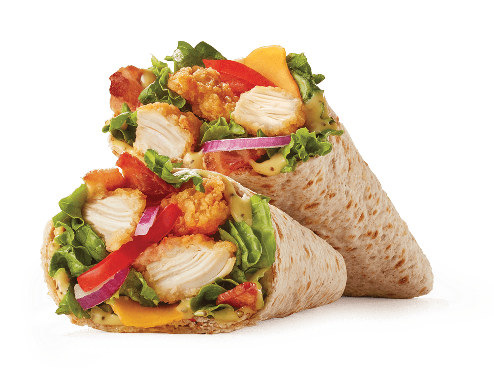

Chicken Snack Wrap

Homemade Chicken Wrap Recipe
Delicious homemade Chicken Snack Wrap Juicy grilled chicken, crisp veggies, and tangy dressing wrapped in a soft tortilla. A flavorful and satisfying snack or light meal option
Ingredients:
- Jane's Chicken Strips (or any brand of your choice)
- Soft tortilla wraps
- Lettuce leaves
- Sliced tomatoes
- Sliced onions
- Mayonnaise or your preferred sauce/dressing
- Optional: Cheese (cheddar, mozzarella, or your favorite type)
Feel free to adjust the ingredients based on your preferences and any additional toppings or seasonings you may like to include. Enjoy your chicken snack wrap!
Instructions:
- Preheat your oven according to the instructions on the Jane's Chicken Strips packaging.You can also cook the chicken strips in a skillet or air fryer if preferred.
- Cook the Jane's Chicken Strips according to the package instructions until they are crispy and cooked through.
- While the chicken strips are cooking, prepare the other ingredients. Wash and dry the lettuce leaves, slice the tomatoes and onions, and set them aside.
- Place the tortillas in the oven 5-10 minutes, or until they are warm and soft.
- Once the chicken strips are cooked, you can assemble the snack wraps. Take a warmed tortilla wrap and place a few chicken strips in the center.
- Add desired amounts of lettuce, sliced tomatoes, sliced onions, and any optional ingredients such as cheese.
- Drizzle mayonnaise or your preferred sauce/dressing over the ingredients.
- Repeat the process for the remaining tortilla wraps and ingredients.
- Fold the sides of the tortilla inward and tightly roll it up from one end to create a wrap.
- Serve the chicken snack wraps immediately and enjoy!